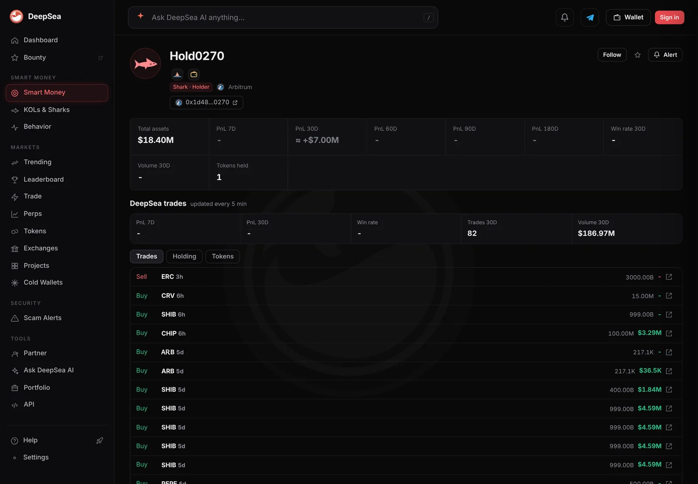
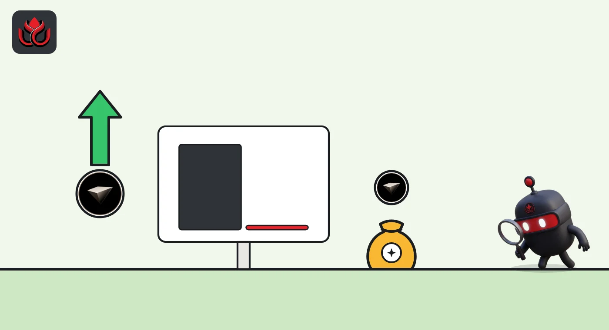

One wallet bought 5% of all circulating CHIP in a single $3.29 million trade
DeepSea logged an $18.4 million Arbitrum shark wallet buying USD.AI's CHIP token as it traded 50% below its price of a month ago. Arbiscan shows the wallet now holds 100 million CHIP.
Key points
- One Arbitrum shark wallet, which DeepSea values at $18.40 million, bought $3,286,812 of CHIP in one trade in the 24 hours to 12:35 a.m. ET on November 11, 2026. No tracked wallet sold CHIP.
- Arbiscan shows the wallet holding 100,000,000 CHIP, worth about $3.25 million: 1% of the 10 billion total supply and 5% of the 2 billion CoinGecko counts as circulating.
- CHIP traded at about $0.0325 on CoinGecko, down 2.6% in 24 hours, 19.8% in a week and 49.9% in 30 days.
 What DeepSea's data shows
What DeepSea's data shows
DeepSea's live flow table for the 24 hours to 12:35 a.m. ET on November 11 put CHIP second on its buying list, which ranks tokens by net buying: $3,286,812 bought, $0 sold, in one trade by one shark wallet. Only Monad's earnAUSD ranked higher.
The buyer is a wallet ending in 0270. DeepSea's wallet page names it Hold0270, a shark and holder, with $18.40 million in total assets at 12:56 a.m. ET. It logged 82 trades and $186.97 million of volume in 30 days. Five days before the CHIP buy it bought SHIB (Shiba Inu) in several lots of up to $4.59 million each. DeepSea's realized PnL table shows no closed trades for it, so it has no record of realized profit or loss. DeepSea calls a shark a large, active wallet. It does not name the owner.

Data: DeepSea (desea.io), checked November 11, 2026, 12:36 a.m. ET.
What the explorer shows
New to the tools? Read what DeepSea is and how layer 2 networks such as Arbitrum work.
We checked the wallet on Arbiscan, the Arbitrum block explorer, at about 12:45 a.m. ET. It listed a balance of 100,000,000 CHIP, valued at $3,251,648, or 1.0000% of the token's supply.
A round 100 million tokens for $3,286,812 works out to about $0.0329 per CHIP, close to the day's market price. The purchase equals about 4.4% of CHIP's $74.4 million of 24-hour trading on CoinGecko.
What CHIP is
CHIP is the governance token of USD.AI, a project DefiLlama lists in its real-world asset (RWA) category on Arbitrum. DefiLlama describes it as a yield-bearing synthetic dollar backed by real-world infrastructure assets. DefiLlama counted about $157.9 million in the protocol at 12:50 a.m. ET.
CoinGecko showed CHIP at $0.0325, a market value of about $65.0 million. The token is 76.8% below its record of $0.1402 from April 23, 2026.
CHIP price change
%
November 11, 2026, about 12:40 a.m. ET. Source: CoinGecko.

How to read the supply numbers
Circulating supply is the number of tokens CoinGecko counts as already trading. Total supply also includes tokens that are locked or not yet released. That is why the same 100 million CHIP is 1% of one figure and 5% of the other.
If more CHIP enters circulation later, this wallet's share of the circulating supply will shrink even if it never sells a token.
Why it matters
One wallet now holds a twentieth of the CHIP CoinGecko counts as circulating. Large single holders can move a small token's price when they sell, and CHIP's whole market value is only about $65.0 million.
The timing stands out too. The buy came after CHIP lost about half its value in 30 days, with the token 76.8% below its April record. A buy of this size into a fall like that is rare in DeepSea's table, but the data cannot say whether it is a long-term bet, a hedge or something else. It shows the buy, not the reason for it, and not who controls the wallet.
LC Insight analysis
This section is our reading of the facts above, not a statement of fact.
- We think the size is the story: one trade bought 5% of the circulating supply after a 50% monthly fall. One round 100 million token buy reads as a single large position, not a string of small trades.
- With no closed trades in DeepSea's realized PnL table, the wallet has no record to judge yet. Its earlier multimillion-dollar SHIB buys suggest it takes large, concentrated positions.
- The rest of the market did not follow in the data: no other tracked wallet bought or sold CHIP in the same 24 hours.
What's next
- Whether the 100 million CHIP stay in the wallet
- CHIP's price against its 24-hour low of $0.0322
- Any further CHIP buying by tracked wallets on DeepSea
Disclaimer. This article is based on public information and the sources listed below as of the update time shown. It is for information only and is not investment, legal or tax advice. Figures may change as companies and authorities publish new data.
Sources
- DeepSea, live flows by token and wallet, 24 hours (read November 11, 2026, 12:36 a.m. ET)
- DeepSea, realized PnL table, 7 and 30 days (read November 11, 2026, 12:36 a.m. ET)
- Arbiscan, CHIP balance of the wallet ending in 0270 (read November 11, 2026, 12:45 a.m. ET)
- CoinGecko, USD.AI (CHIP) price, supply and record (read November 11, 2026, 12:40 a.m. ET)
- DefiLlama, USD AI protocol page and TVL API (read November 11, 2026, 12:50 a.m. ET)